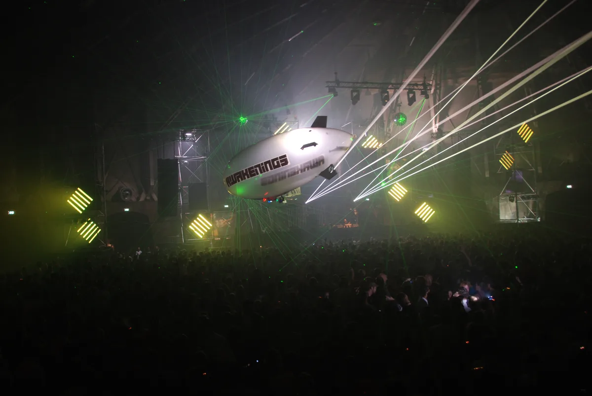

Awakenings
Awakenings Festival
A Dutch techno festival founded in Amsterdam in 1997, techno and only techno ever since. Where the summer festival and the Amsterdam Dance Event special happen, the accidental origin of the name, and who plays.
One genre, almost thirty years.
Search for Awakenings and the top results are the festival's own site, Wikipedia and Instagram: a navigational head with no room for an outside guide. Ask what it actually is, though, and the picture is worth explaining properly, because Awakenings has stayed one thing for almost thirty years while most festivals its age have diversified their bookings. It plays techno and only techno, named itself after a joke about Easter, and grew out of a single room in Amsterdam into a festival that sells out a field in Brabant.
Where and when Awakenings happens.
The main Awakenings Summer Festival runs at Beekse Bergen, a recreational area in Hilvarenbeek, in the south of the Netherlands near Tilburg. The 2026 edition ran 10 to 12 July; the 2027 edition is booked for 9 to 11 July. Some older sources, including Wikipedia, still describe the outdoor festival as running at Spaarnwoude, between Amsterdam and Haarlem: that area now hosts Awakenings Upclose, a separate, smaller spring event, while the main summer festival has moved south to Beekse Bergen.
| Fact | Detail |
|---|---|
| Founded | 30 March 1997, Gashouder, Amsterdam |
| Organiser | Monumental Productions, owned by LiveStyle since 2015 |
| Genre | Techno only |
| Summer festival 2026 | 10 to 12 July, Beekse Bergen, Hilvarenbeek, sold out |
| Summer festival 2027 | 9 to 11 July, Beekse Bergen, Hilvarenbeek |
| Amsterdam Dance Event special 2026 | 21 to 25 October, Gashouder, Amsterdam |
| DJ Mag Top 100 Festivals 2026 | 34th, down 14 places |

Amsterdam remains central to the brand in a different way. Since 2012, the Awakenings Amsterdam ADE special has run every October at the Gashouder, the round former gasholder in the Westergasfabriek where the whole series began in 1997. The 2026 edition runs 21 to 25 October.
A short history, and who owns Awakenings.
Awakenings started as a single party on 30 March 1997, in the Gashouder at the Westergasfabriek in Amsterdam, with DJs Angelo, Billy Nasty, Derrick May, Dimitri, Godard, Nick Rapaccioli and Zen. Organiser Rocco Veenboer named it almost by accident: the first party fell around Easter, and after looking into what the holiday actually commemorated, the resurrection of Jesus, he settled on Awakenings.
The Gashouder needed renovation in 2000, so the parties moved to Now & Wow in Rotterdam and later alternated with NDSM in Amsterdam, before the Westergasfabriek reopened as Awakenings' permanent home in February 2005. That return brought its own trouble: Amsterdam police raided parties at the Gashouder twice in late 2006, arresting 131 people in October and 82 more in November, and the city denied a permit for that year's New Year's Eve event after officials cited hard drug use at recent editions.
The festival expanded abroad in 2014, with one-off editions in London, New York, Manchester and Antwerp, and events at partner festivals in Australia, India, Brazil and the United States. In 2015, LiveStyle, then trading as SFX, bought the organisation behind it. Awakenings marked its 20th anniversary in 2017 with a book, and went fully online and free for 2020, streaming DJ sets filmed at the Gashouder during the first year of the pandemic.
The music
What plays at Awakenings.
Awakenings books techno and nothing else, and often frames a night or a stage around a theme: minimal, Detroit techno, schranz, Drumcode or Kne'Deep have all anchored editions in the past. Adam Beyer, Carl Cox and Joseph Capriati are among the names most closely tied to the festival's history. Awakenings tickets for the main summer weekend sold out well before the 2026 gates opened, and DJ Mag ranked the festival 34th in its Top 100 Festivals poll for 2026, down 14 places from the year before.
Awakenings Festival FAQ.
What is Awakenings Festival?
A Dutch techno festival founded in Amsterdam in 1997, now built around a three-day summer festival at Beekse Bergen in Hilvarenbeek and an Amsterdam Dance Event special every October at the Gashouder, where it started.
Why is it called Awakenings?
Founder Rocco Veenboer picked the name almost by accident. The first edition fell around Easter, and looking into what the holiday marks, the resurrection of Jesus, led him to Awakenings.
Where is Awakenings Festival?
The main summer festival runs at Beekse Bergen in Hilvarenbeek, near Tilburg. Some sources still list Spaarnwoude, between Amsterdam and Haarlem: that's now the site of Awakenings Upclose, a separate, smaller spring event, not the main summer festival.
Is Awakenings only techno?
Yes. Unlike most festivals its size, Awakenings has never broadened into other genres, and individual nights are often built around a specific techno theme, such as Detroit techno, schranz or Drumcode.
How big is Awakenings Festival?
Big enough to sell out its Beekse Bergen weekend a month or more ahead: the 2026 edition sold out as the largest in the festival's 29-year history, and DJ Mag ranked it 34th among the world's festivals for 2026.
Sources.
- Wikipedia: Awakenings (festival)
- Awakenings: official site
- Awakenings: how to travel to Awakenings Festival 2026
- DJ Mag: Top 100 Festivals 2026
- Video embed is drawn from this site's own catalogue of recorded DJ sets, as of September 2026.
Continue reading
Read next.
 Rave spots~10 min read
Rave spots~10 min readBest Clubs in Berlin: The Legends and the Ones Still Open
The rooms that made Berlin a techno city, the famous clubs that closed, and the best clubs in Berlin that are still open.
Read article → Rave spots~6 min read
Rave spots~6 min readBest Clubs in Paris: From Le Palace to Rex Club
Le Palace, Les Bains Douches and Rex Club: the clubs that made Paris nightlife, how each became famous, and the best clubs in Paris open now.
Read article → Rave spots~6 min read
Rave spots~6 min readBest Clubs in Barcelona: From Zeleste to Razzmatazz
Razzmatazz, Nitsa and Macarena Club: how Barcelona's biggest club grew out of a 1970s live venue, and the best clubs in Barcelona open now.
Read article → Rave spots~11 min read
Rave spots~11 min readBest Clubs in NYC: From the Paradise Garage to Nowadays
Nowadays, Basement, Public Records, Good Room and Elsewhere: the best clubs in NYC for house and techno now, and the history from the Loft to Output.
Read article →